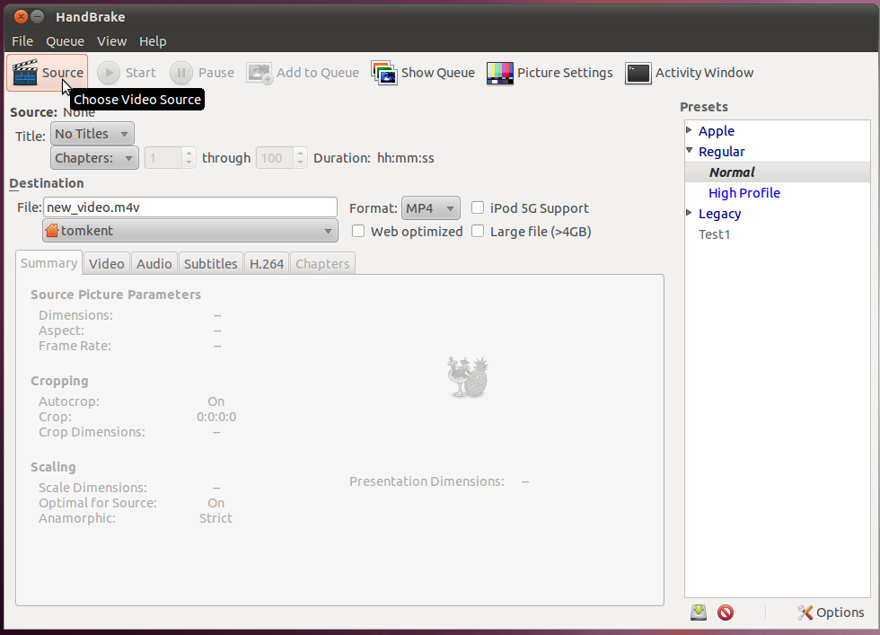
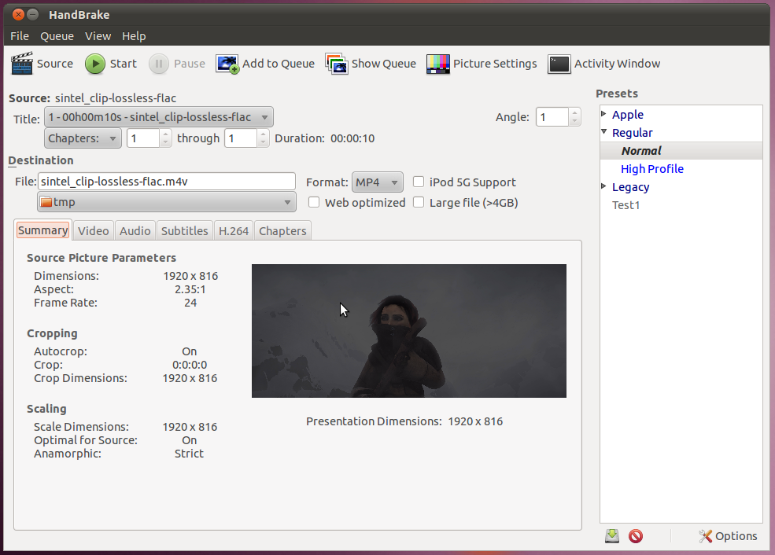
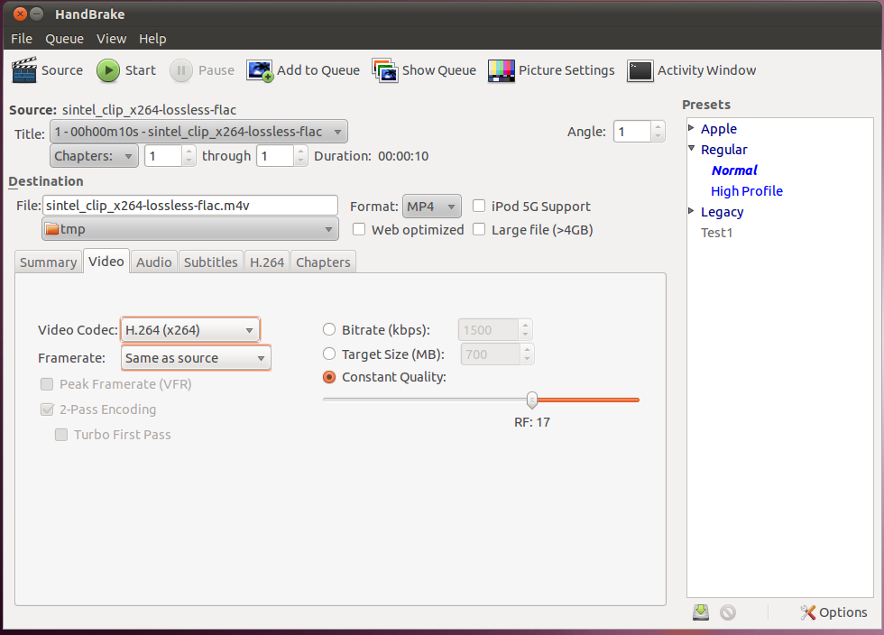
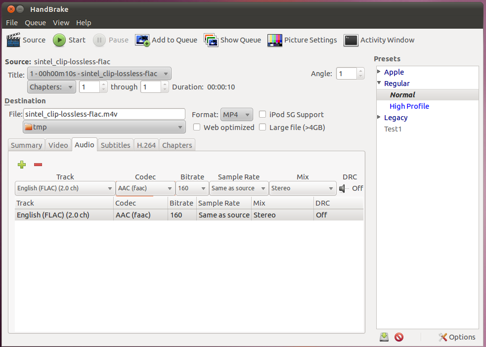
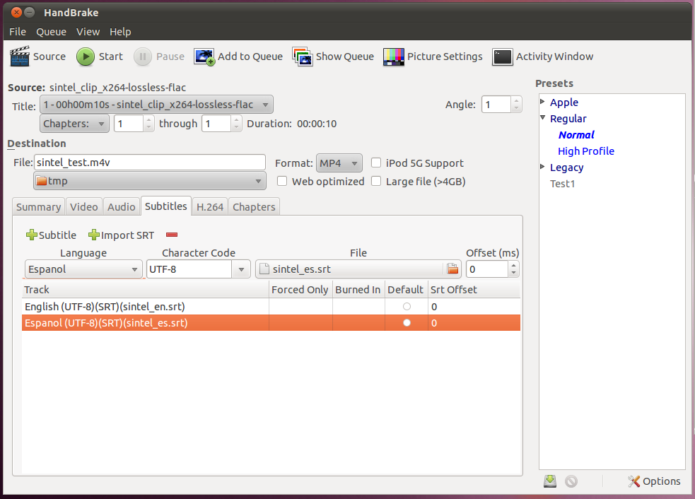
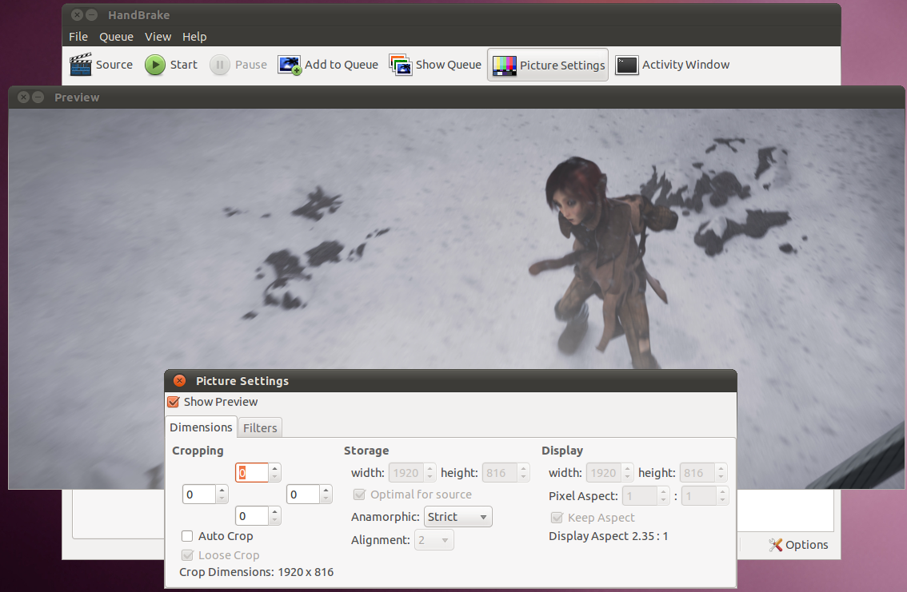
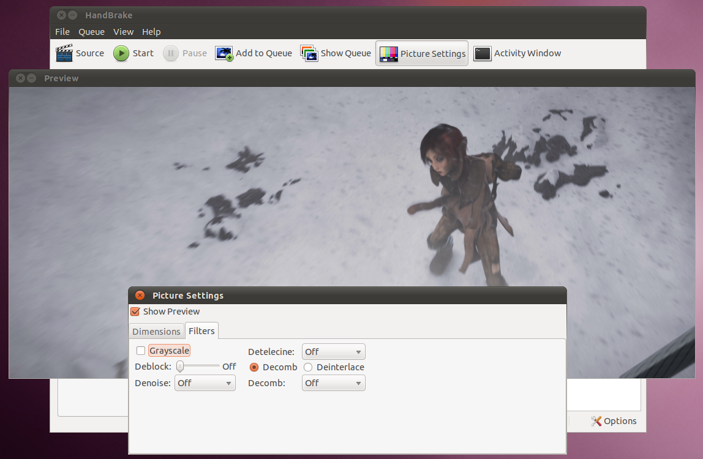
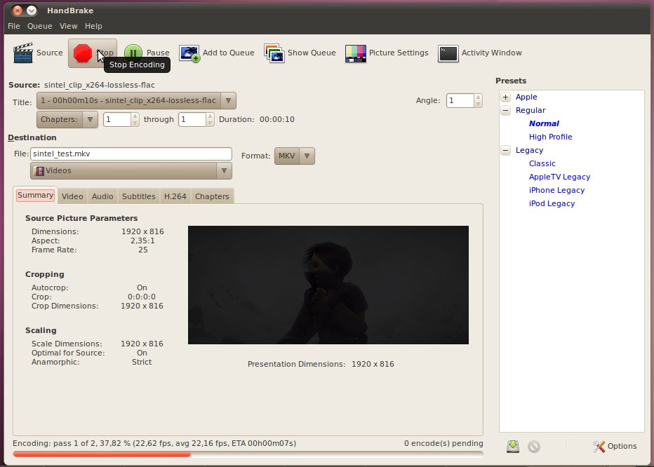

Handbrake
Handbrake is a video transcoder that can take in video of one format
(typical computer video, but also DVD or BluRay format) and output a
video in one of several popular formats.
To show the conversion in action, we are going to open this lossless segment of the sintel trailer, and use
Handbrake to make a compressed version of it.
Lets start up Handbrake.

Click the Source button and load the video we want to convert.
Once the video is loaded, you will see a lot of the information on the
screen populated.

The "Source:" section contains information about our video. In
this case, it says it is 10 seconds long, and there is only one chapter
and angle. For videos coming off of a DVD or BluRay this may have
multiple chapters and/or angles.
The "Destination" has the file we will write the output to. The
only two options are MP4 (MPEG 4) or MKV (Matroska). For MP4, it
is possible to check the "Web optimized" box. This puts
information about the video in the front of the file, so if you put it
on a web-page it can start playing before the entire video has been
downloaded.
On the summary tab, there is information about the input video,
specifically dimensions (which give the aspect ratio) and the frame
rate.
Going to the video tab gives us options for compressing the video.

The video codec options that are available are: H.264, MPEG 4 (Part 2),
and Theora (not availble with MP4). To the right, there are
options for specifying how the encoder should determine the size of the
file. You can set the average bit-rate that you desire, or you
can set the size of the final file you would like and the encoder will
figure out what bit-rate it can use. When either of these options
are set, you can enable 2-Pass encoding with the check-box on the left.
There is also a third option which is to set the quality of the final
video. Smaller numbers mean higher quality and higher file size,
lower numbers are lower quality and file size.

On the Audio tab are the options for encoding each track of
audio. Handbrake will allow you to put multiple tracks of audio
into one file (multiple languages, a track with the director's
comentary, etc) that the viewer can then select while they are watching
the video. For each track of audio, a codec (AAC, MP3, Vorbis
(only available in MKV format), or AC3) can be selected along with a
bit-rate.

The subtitles page is similar to the audio page, in that you can have
several subtitle tracks built in to the single video file. You
can use any subtitles from the source, or add external ones from a .srt
file.

By clicking the Picture Settings button at the top of the application,
it is possible to change the dimensions of the video, by cropping or
stretching the video.

Finally, by going to the filters tab of the pictures settings, it is
possible to apply some simple filters. The most important of
which would be "Deinterlace" which will fix interlaced video for use on
a computer screen.
Once you have all the settings correct, hit the Start button at the
top, and the encoding will start. You will see the status of the
encoding along the bottom.
